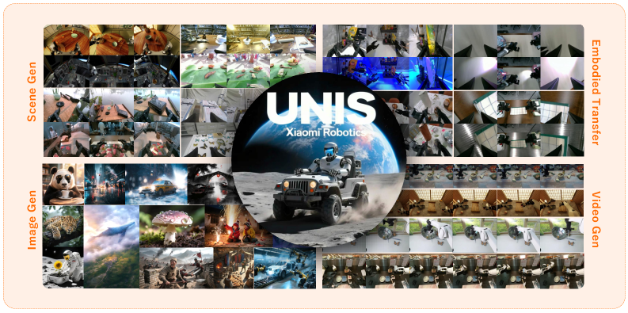
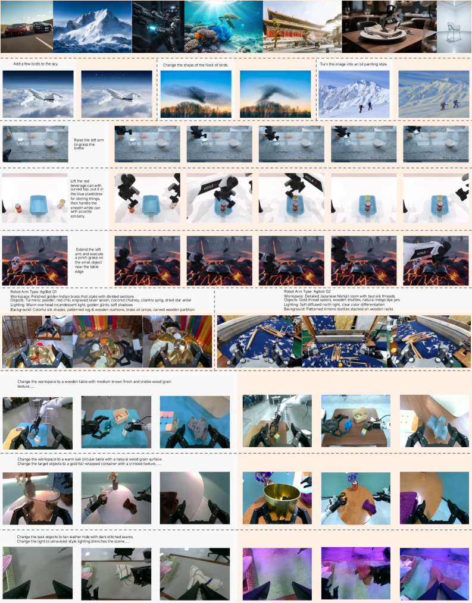

World Foundation Model38B AR MultimodalEMU3.5Qwen-3-32BEmbodied Data Aug
제출: 2026년 7월 13일 (v1) · 백본 EMU3.5 + Qwen-3-32B · IBQ 토크나이저 · FlashAR+ 27.22× 가속
한 줄 요약 (TL;DR)
텍스트→이미지, 이미지 편집, embodied 장면 생성, embodied transfer, embodied 영상 생성의 5개 태스크를 단일 next-token 예측 프레임으로 통합한 38B 자기회귀 멀티모달 world foundation model. GPT-Image-2.0을 사람 평가·기하 정합성(SI-RMSE 0.14 vs 0.40, mIoU 0.76 vs 0.41)에서 앞서고, WorldArena 100+ 모델 중 EWMScore 73.64로 1위. 생성 증강을 정책 학습에 투입하면 π0.5 실기 성공률 36.9→63.2%. FlashAR+ 추론 가속으로 1024×1024 이미지가 27.22× 빨라짐(450.77s → 16.56s).
1배경 · 문제의식
Embodied 파운데이션 모델은 실제 로봇 데이터가 희소해 시뮬레이터·증강에 의존하나, 기존 T2I/VLM은 3D·기하 일관성과 플랫폼 간 embodied transfer가 약해 정책 사전학습에 그대로 쓰기 어렵다. 저자들은 (i) 단일 자기회귀 모델이 텍스트/이미지/영상 모든 embodied 합성 태스크를 다뤄야 하고, (ii) 실제 정책 성공률을 실질적으로 끌어올릴 만큼 기하·의미 정합성이 확보된 데이터가 필요하며, (iii) 시뮬 없이 물체 배치·조명·시점 무작위화가 가능한 데이터 증강 파이프라인이 필요하다고 본다.
2핵심 Contribution
Unified Embodied Synthesis 프레임워크 — T2I·편집·embodied 장면 생성·embodied transfer·영상 생성을 하나의 자기회귀 next-token 목적으로 통합.
38B 스케일 World Foundation Model — EMU3.5 계열 + Qwen-3-32B 트랜스포머, 16×16 공간 압축 IBQ 토크나이저. 9.5M single-step(56.4B token) + 2.6M video(49.6B token)로 학습.
정책 성능으로 검증된 생성 증강 — 생성 데이터를 π0.5 정책 학습에 투입 → 배경/물체/조명 분포 이동에서 실기 성공률 36.9→63.2%(interference group에서 특히 큰 이득).
FlashAR+ 추론 가속 — anti-diagonal 병렬 생성 + step-causal attention 마스킹으로 27.22× 가속, vLLM 통합 시 추가 3.04×.
End-to-end World Arena 1위 — 100+ 월드 모델과 견주어 종합 EWMScore 73.64, 명령 추종 93.86, 상호작용 물리 정합 87.30.
3Method
모델 스택
EMU3.5의 자기회귀 멀티모달 구조를 확장해 Qwen-3-32B 트랜스포머 백본(총 38B) 위에 IBQ 토크나이저(16×16 공간 압축)를 붙임. 모든 태스크가 하나의 next-token 예측으로 표현되며, 각 태스크는 입력·출력 스페셜 토큰과 컨디셔닝 프리픽스로만 구별된다.
5 태스크 통합 목적
T2I
텍스트 → 이미지 토큰 시퀀스 생성
Image Editing
이미지+텍스트 → 편집된 이미지
Embodied Scene Gen
텍스트+로봇/카메라 컨디션 → 조작 가능한 embodied 장면 (배경·조명·배치)
Embodied Transfer
한 embodiment의 관측을 다른 embodiment 시점/그리퍼로 변환 (depth·시맨틱 유지)
Embodied Video Gen
초기 프레임 + 텍스트 → 미래 프레임 시퀀스
학습 데이터 (도메인 6종)
일반 이미지, embodied 조작, 자율주행, 에고센트릭 영상, 3D 재구성, 게임 데이터. 공동 학습(co-training)으로 일반 T2I/X2I와 embodied-specific 태스크를 함께 학습해 catastrophic forgetting을 억제. 9.5M single-step (56.4B 토큰) + 2.6M video (49.6B 토큰).
FlashAR+ 추론 가속
표준 AR은 이미지 토큰을 순차 생성해 1024×1024이면 450.77초가 걸린다. FlashAR+는 anti-diagonal parallel decoding(대각선 방향으로 조건부 독립인 토큰을 배치 처리) + step-causal attention mask로 병렬화해 16.56초(27.22×)로 단축. vLLM 통합 시 추가 3.04× 가속.
4실험 결과
Embodied Transfer 정량 지표 (vs GPT-Image-2.0)
모델
SI-RMSE ↓ (depth)
mIoU ↑ (semantic)
GPT-Image-2.0
0.40
0.41
Xiaomi-U0
0.14
0.76
Depth 일관성 오차는 1/3 이하, 시맨틱 정합은 거의 2배. embodied transfer가 기하·의미 정합성을 요구하는 조건에서 GPT-Image-2.0 대비 명확한 우위.
정책 학습에의 실전 기여 (π0.5, 실기)
실기 조건
π0.5 (baseline)
π0.5 + Xiaomi-U0 증강
in-distribution
~비슷
~비슷
distribution shift / interference
36.9
63.2
Store Earphones / Fold Towel / Pack Box 세 태스크에서 일관되게 개선. 생성 증강이 OOD 강건성을 실측 정책 수준에서 끌어올림.
World Arena — 월드 모델 종합 순위
EWMScore 73.64로 1위 (100+ 모델 비교).
Instruction Following 93.86 (최고).
Interaction Quality 87.30 (물리 정합 최고).
FlashAR+ 추론 지연
디코딩
1024×1024 이미지 소요
배속
표준 AR
450.77 s
1.00×
FlashAR+
16.56 s
27.22×
FlashAR+ + vLLM
—
~82.7×
5Ablation (주요 발견)
Co-training: 일반 T2I/X2I를 embodied-specific과 함께 학습 → 일반 능력과 embodied 능력이 상호 보완, catastrophic forgetting 억제.
도메인 다양성 (6개): 자율주행·에고센트릭·3D·게임 데이터를 포함해 시점/조명/카메라 분포를 확장. embodied transfer의 시점 일반화에 기여.
정책 검증의 함의: 생성 이미지가 시각적으로 그럴듯한 것과 정책 성공률을 실제로 올리는 것은 다른 문제. Xiaomi-U0는 π0.5 실기에서 +26.3pt로 후자에도 유효함을 입증.
FlashAR+ 병렬성: 인접 anti-diagonal 토큰들의 조건부 독립성을 활용해 원본 AR 품질을 유지하면서 순차 디코딩 대비 지연을 27배 단축.
6핵심 Figure / Table

Figure 1 — Xiaomi-Robotics-U0의 embodied·일반 능력 개요. 같은 embodiment 초기 관측, pairwise transfer 샘플, embodied video의 키프레임을 나란히 배치해 5가지 태스크 커버리지를 보임. 모든 프레임은 참조·생성된 이미지. (출처: arXiv:2607.11643)

Figure 2 — 5 태스크 통합 개요. Gray는 입력, Orange는 출력. T2I·편집·embodied 장면 생성·transfer·영상 생성이 동일한 자기회귀 프레임에서 정의됨. (출처: arXiv:2607.11643)
SI-RMSE 0.14 vs GPT-Image-2.0 0.40 — 단순 사실적 렌더링이 아닌 기하 정합이 embodied 파운데이션 모델의 실질 지표임을 강조하는 핵심 수치.
π0.5 36.9→63.2% — 생성 데이터가 실제 로봇 정책의 OOD 강건성을 끌어올린다는 end-to-end 검증. 세대별 embodied 파운데이션 모델의 성패는 결국 이 지표로 판가름 난다는 저자 주장.